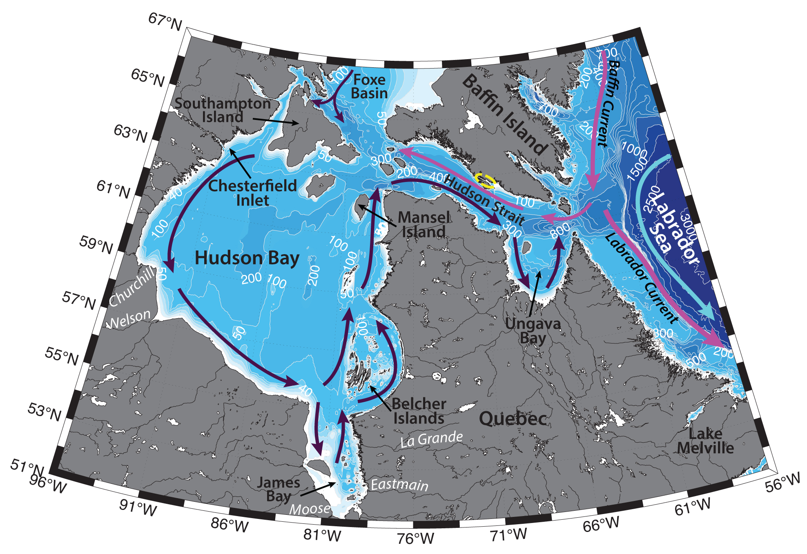

Schematic water circulation patterns and geographical place names in the Ungava Bay region. Adopted from Cunny et al. (2002), Straneo and Saucier (2008), Macdonald and Kuzyk (2011). Dashed yellow line marks the studied region.
Hudson Strait, a narrow (~100 km) and long (~400 km) channel with a mean depth of 300 m, connecting Hudson Bay (as well as James and Ungava Bays, Foxe Basin, etc.) to the Labrador Sea. Mentioned reservoirs are very fresh, due to the large volume of freshwater runoff (900 km3/yr; De´ry et al., 2005), as well as Arctic origin waters of the Canadian archipelago. As a result, the strait and the bays comprise an estuarine system, that completely freezes over in winter, and is ice-free during summer (Prinsenberg 1988).
Hydrography of the Hudson Strait is determined by the freshwater runoff and Arctic waters, as well as atmospheric forcing, tides and influence of the Labrador Shelf. Flow in the strait is in opposite directions along the two coasts: there is an inflow of relatively warm and salty waters (-0.5 ºC<T<1 ºC, S~33) into the Hudson Bay along the northern shore of the Hudson Strait – along Baffin Island, and an eastward flowing current along the southern (Quebec) coast of the strait that carries fresh waters (S<33) into the Labrador Sea out of the estuarine system (e.g. LeBlond et al., 1981). Beneath the outflowing fresh water, a saltier and cold (at freezing point) water mass is located above the 100–150m isobath. Many authors (e.g. LeBlond et al., 1981; Sutcliffe et al., 1983; Straneo and Saucier, 2008) consider, that it is unlikely, that the source for the inflow current is West Greenland Current, as the latter is advected along the 3000 m isobath, hence far away from the Hudson Strait mouth. As such, Straneo and Saucier (2008) suggest, that part of the outflow from Davis Strait (approximately 25% of its volume) turns westwards into the Hudson Strait.
Both inflowing and outflowing currents are thought to be confined within 40 km of coast. While the outflow current is baroclinic and surface-intensified and produces strong stratification along the southern coast (especially in the surface layer), the inflow current is barotropic and the stratification on the northern side of the strait is weak. This is consistent with the fact, that at the mouth of the Hudson Strait (in Ungava Bay and on the Labrador Shelf) strong mixing occurs due to tides (LeBlond et al., 1981). The amplitudes of these mostly semidiurnal tides can reach ~ 8 m and the speeds ~ 3 m/s (Sutcliffe et al., 1983). Due to strong tidal movements, tidal fronts separate the areas and mid-strait waters have relatively long residence times in the strait. Local and remote atmospheric forcing also influences flow variability, for example, along-strait winds often cause downwelling at the Quebec coast. Across-strait velocities generally are negligible (Straneo and Saucier, 2008).
The outflow through the Hudson Strait further contributes to the Labrador Current – a fresh and cold (T ∼ −1.5°C, S ≤ 34) shallow (extending down to 500 m) ~ 50 km wide current flowing southeastwards along the Labrador Shelf. Labrador Current also incorporates the West Greenland Current (fresh and cold water from the Nordic Seas advected northwestwards along the western Greenland coast) and Baffin Current (outflow along the west side of Baffin Bay). Straneo and Saucier (2008) have calculated, that the Hudson Strait outflow accounts approximately for 15% of the volume and 50% of the fresh water carried by the Labrador Current. They have studied, that this larger than expected outflow is not directly correlated with the interannual river discharge due to the storage and release of freshwater from Hudson Bay.
The Labrador Current is advected mainly above the shelf and is one of the main pathways for the equatorward export of cold and fresh waters from the Labrador Sea; it also carries icebergs from the Canadian archipelago southwards (e.g. Yashayaev, 2007). The Labrador Current largely determines hydrography, productivity and ecosystem properties along the Labrador Shelf (and the downstream North Atlantic, it restratifies the Labrador Sea after the deep winter convection (Straneo and Saucier, 2008). Large nutrient input from the Hudson Strait is responsible for the higher productivity of the Labrador shelf, relative to the Baffin Bay shelf (e.g. Drinkwater and Harding, 2001; Straneo and Saucier, 2008).
The transport of the Labrador Current is estimated to be ~11 Sv ±4 Sv (Lazier and Wright 1993). Due to variations in freshwater flux from the Baffin and Hudson bays, the maximum velocities in the current are observed during October, and minimum in April – March (Lazier and Wright 1993). The freshest waters are exported from the Hudson Strait between June and March with peak fresh periods from mid-October to mid-December. The bulk of the fresh water export during the fall occurs through a series of pulses of fresher waters associated with a speeding up of the flow. This seasonal variability is consistent with the strongly seasonal fresh water input due to rivers and sea-ice melt (Straneo and Saucier, 2008).